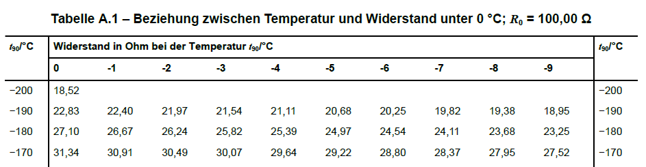
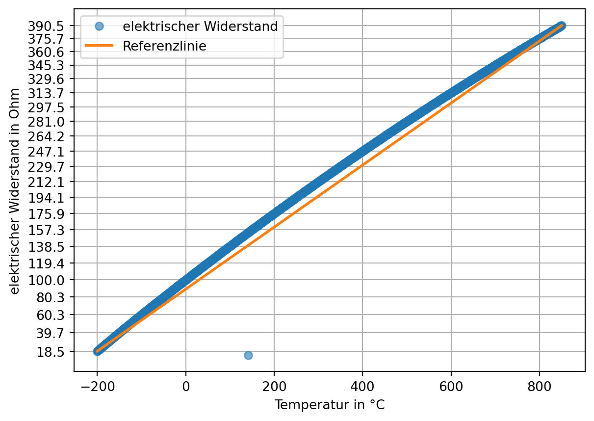
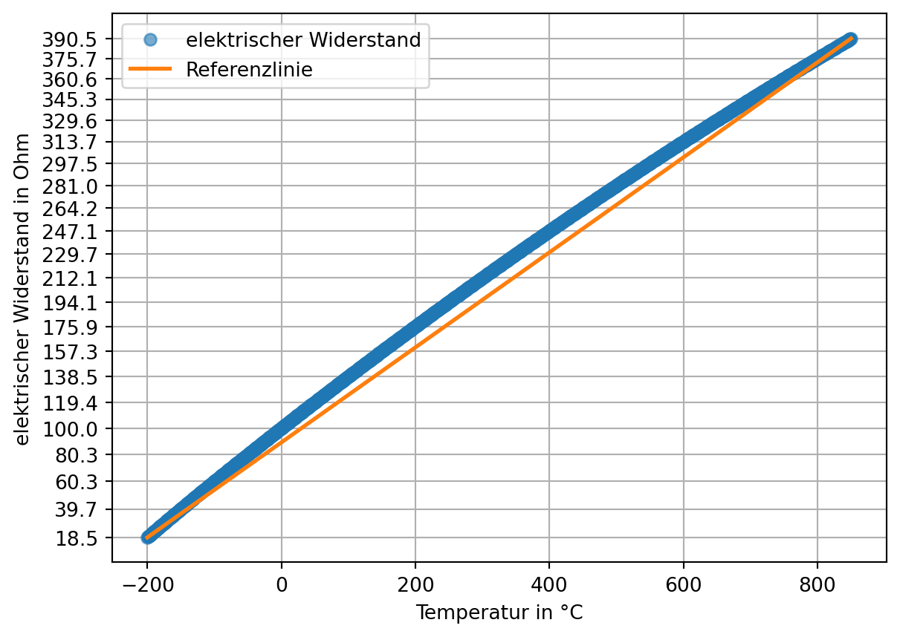
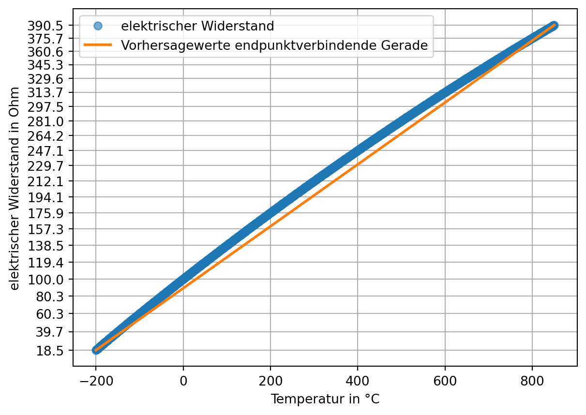
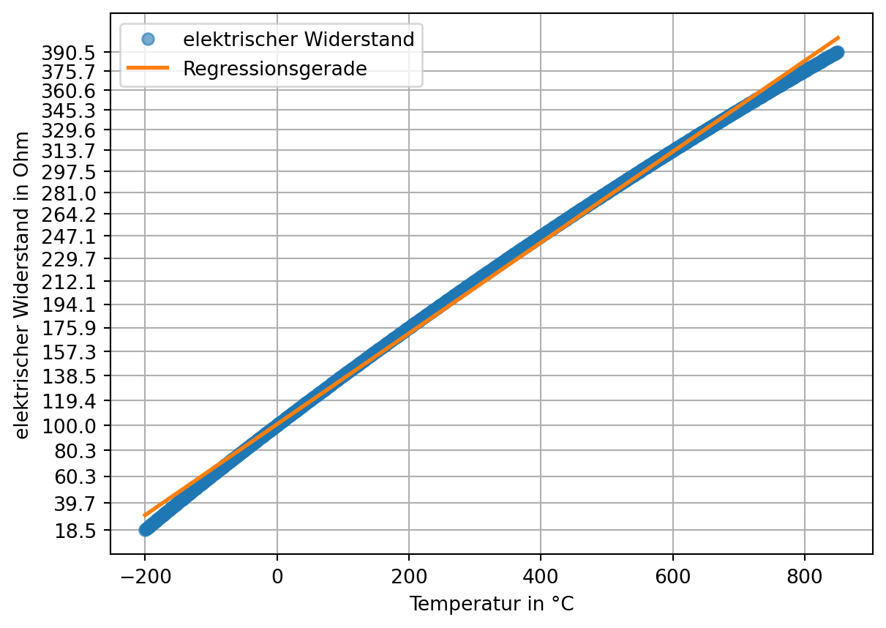

dateipfad_belowzero = '01-daten/pt100-table-below-zero.csv'
dateipfad_abovezero = '01-daten/pt100-table-above-zero.csv'6 Kalibrierung
Bei einer idealen Messung hängt der gesuchte Wert linear vom gemessenen Wert ab. Viele analoge Sensoren reagieren aufgrund von Materialeigenschaften oder abhängig von der Temperatur nicht linear auf die gemessene Größe. Das heißt, die Messwerte sind nicht direkt proportional zur Messgröße. Dieser sogenannte Linearitätsfehler muss korrigiert werden, um genau zu messen.
Dafür gibt es zwei Möglichkeiten. Zum einen können nicht lineare Verfahren zur Parameterschätzung verwendet werden, was im Methodenbaustein Datenfitting und Datenoptimierung behandelt wird. Zum anderen kann der Liniearitätsfehler korrigiert werden, um mit den leichter zu handhabenden linearen Verfahren der Parameterschätzung arbeiten zu können. Die Korrektion von Linearitätsfehlern wird in diesem Kapitel behandelt.
Daten von einer anderen Messung: Andres Fahrradsensor misst immer 3 Grad zu viel, weil das Display Abwärme macht (Offset-Fehler).
6.1 Beispiel Pt100
Das Pt100 ist ein Platin-Widerstandsthermometer (Pt = Platin) mit einem definierten Widerstandswert von \(100 \Omega\) bei einer Temperatur von 0°C (daher der Name Pt100). Der Widerstand eines Pt100 steigt mit der Temperatur. Bei 100 °C beträgt der Widerstand beispielsweise \(138,51 \Omega\). Der Zusammenhang zwischen der Eingangsgröße, dem elektrischen Widerstand, und der so gemessenen Temperatur ist jedoch nur näherungsweise linear.
Die Eigenschaften eines Pt100 Widerstandes sind in der Norm DIN EN IEC 60751 (Deutsches Institut für Normung 2023) festgelegt. Dort wird der Zusammenhang durch zwei Polynome für den Temperaturbereich von -200 °C bis 0 °C und für den Temperaturbereich von 0 °C bis 850 °C beschrieben.
Für den Temperaturbereich –200 °C bis 0 °C: \[ R_T = R_0 \cdot \left(1 + A \cdot T + B \cdot T^2 + C \cdot (T - 100 ^\circ\text{C}) \cdot T^3\right) \]
Für den Temperaturbereich von 0 °C bis +850 °C: \[ R_T = R_0 \cdot \left(1 + A \cdot T + B \cdot T^2\right) \]
Dabei gilt:
\(R_T\) ist der Widerstand bei der Temperatur \(T\),
\(R_0\) ist der Widerstand bei \(0^\circ\text{C}\),
\(A\), \(B\) und \(C\) sind Konstanten, die den spezifischen Charakter des Sensors beschreiben. Dabei sind:
- \(A = 3.9083 \times 10^{-3} ~ {^\circ\text{C}}^{-1}\)
- \(B = -5.775 \times 10^{-7} ~ {^\circ\text{C}}^{-2}\)
- \(C = -4.183 \times 10^{-12} ~ {^\circ\text{C}}^{-4}\)
(Deutsches Institut für Normung 2023, 13)
Im Anhang der Norm befinden sich Tabellen, die die Beziehung zwischen Temperatur und gemessenem Widerstand wiedergeben. Das Format der Tabellen, erlaubt es, aus einem gemessenen Widerstandswert schnell die gemessene Temperatur zu ermitteln. Dazu sind in der ersten Spalte die Temperaturen in Zehnerschritten, in den folgenden zehn Spalten die Einerstelle eingetragen. Für Temperaturen unter Null ist die Einerstelle jeweils zu subtrahieren (erkennbar am Vorzeichen \(-\)), für Temperaturen über Null dagegen zu addieren (erkennbar am Vorzeichen \(+\)). Eine zusammengefasste Darstellung finden Sie zum Beispiel hier.

(Deutsches Institut für Normung 2023, 25)
Die Notation \(t_{90} / °C\) beruht auf der Internationalen Temperaturskala ITS-90 von 1990, die Temperaturen \(T_{90}\) in Kelvin und \(t_{90}\) in Grad Celsius definiert. Die Notation zeigt also an, dass in der Tabelle Angaben in Grad Celsius stehen.(Deutsches Institut für Normung (2023), S. 10)
Aufgabe Pt100-Tabelle einlesen
Für die Datenanalyse ist das tabellarische Format weniger geeignet. Die hier zusammengefasste Darstellung wurde in zwei CSV-Dateien kopiert. Lesen Sie die Dateien so ein, dass der elektrische Widerstand und die Temperatur jeweils eine aufsteigende Datenreihe bilden (z. B. als Liste, NumPy-Array oder eine Pandas-Datenstruktur). Die Dateipfade lauten:
'skript/01-daten/pt100-table-below-zero.csv'
'skript/01-daten/pt100-table-below-zero.csv'Marc kann eine weitere Musterlösung versuchen
Tipp 6.1: Musterlösung Pt100-Tabelle einlesen
Dateien einlesen und betrachten. Zunächst die Datei mit Temperaturen unter 0 Grad Celsius.
# belowzero
belowzero = pd.read_csv(filepath_or_buffer = dateipfad_belowzero, sep = ',')
print(belowzero.head(), "\n")
print(belowzero.tail()) Temperatur in °C Unnamed: 1 Unnamed: 2 Unnamed: 3 Unnamed: 4 Unnamed: 5 \
0 NaN 0 -1 -2 -3 -4
1 -200.0 18,52 NaN NaN NaN NaN
2 -190.0 22,83 22,4 21,97 21,54 21,11
3 -180.0 27,1 26,67 26,24 25,82 25,39
4 -170.0 31,34 30,91 30,49 30,07 29,64
Unnamed: 6 Unnamed: 7 Unnamed: 8 Unnamed: 9 Unnamed: 10
0 -5 -6 -7 -8 -9
1 NaN NaN NaN NaN NaN
2 20,68 20,25 19,82 19,38 18,95
3 24,97 24,54 24,11 23,68 23,25
4 29,22 28,8 28,37 27,95 27,52
Temperatur in °C Unnamed: 1 Unnamed: 2 Unnamed: 3 Unnamed: 4 Unnamed: 5 \
17 -40.0 84,27 83,87 83,48 83,08 82,69
18 -30.0 88,22 87,83 87,43 87,04 86,64
19 -20.0 92,16 91,77 91,37 90,98 90,59
20 -10.0 96,09 95,69 95,3 94,91 94,52
21 0.0 100 99,61 99,22 98,83 98,44
Unnamed: 6 Unnamed: 7 Unnamed: 8 Unnamed: 9 Unnamed: 10
17 82,29 81,89 81,5 81,1 80,7
18 86,25 85,85 85,46 85,06 84,67
19 90,19 89,8 89,4 89,01 88,62
20 94,12 93,73 93,34 92,95 92,55
21 98,04 97,65 97,26 96,87 96,48 Es gibt 201 Werte (von -200 bis 0). Die Daten beginnen in der Zeile mit dem Index 1 (wenn die erste Zeile als header eingelesen wird). Diese enthält nur einen Eintrag in der Spalte ‘0’. Die folgenden Zeilen sind von rechts nach links einzulesen. Das Dezimaltrennzeichen ist das ,.
Das Einlesen der Daten von rechts nach links kann auf viele Arten bewerkstelligt werden. Eine einzeilige Lösung beginnt damit, der Methode pd.iloc[::-1] eine negative Schrittweite zu übergeben.
df = pd.DataFrame(np.array([[3, 2, 1], [6, 5, 4]]))
print(df, "\n")
print(df.iloc[::-1]) 0 1 2
0 3 2 1
1 6 5 4
0 1 2
1 6 5 4
0 3 2 1Das führt dazu, dass die Zeilen des DataFrame in umgekehrter Reihenfolge ausgegeben werden. Um die Spalten in umgekehrter Reihenfolge auszugeben, wird der DataFrame mit der Methode pd.T zwei mal transponiert.
print(df.T.iloc[::-1].T) 2 1 0
0 1 2 3
1 4 5 6Mit der NumPy-Methode np.flatten() kann ein Array in eine eindimensionale Struktur reduziert werden. Dafür wird mit der Methode pd.to_numpy() der DataFrame als NumPy-Array ausgegeben.
print(df.T.iloc[::-1].T.to_numpy())
print() # leere Zeile
print(df.T.iloc[::-1].T.to_numpy().flatten())[[1 2 3]
[4 5 6]]
[1 2 3 4 5 6]Versuchen wir es mit dem Kopf der Pt100-Daten.
belowzero = pd.read_csv(filepath_or_buffer = dateipfad_belowzero, sep = ',', decimal = ',', header = 0, skiprows = 1, index_col = 0)
print(belowzero.head())
print() # leere Zeile
print(belowzero.head().T.iloc[::-1].T.to_numpy().flatten()) 0 -1 -2 -3 -4 -5 -6 -7 -8 -9
-200 18.52 NaN NaN NaN NaN NaN NaN NaN NaN NaN
-190 22.83 22.40 21.97 21.54 21.11 20.68 20.25 19.82 19.38 18.95
-180 27.10 26.67 26.24 25.82 25.39 24.97 24.54 24.11 23.68 23.25
-170 31.34 30.91 30.49 30.07 29.64 29.22 28.80 28.37 27.95 27.52
-160 35.54 35.12 34.70 34.28 33.86 33.44 33.02 32.60 32.18 31.76
[ nan nan nan nan nan nan nan nan nan 18.52 18.95 19.38
19.82 20.25 20.68 21.11 21.54 21.97 22.4 22.83 23.25 23.68 24.11 24.54
24.97 25.39 25.82 26.24 26.67 27.1 27.52 27.95 28.37 28.8 29.22 29.64
30.07 30.49 30.91 31.34 31.76 32.18 32.6 33.02 33.44 33.86 34.28 34.7
35.12 35.54]Um die fehlenden Werte zu überspringen, wandeln wir das bisherige Ergebnis wieder in eine pd.Series() und verwenden die Methode pd.Series.dropna().
pd.Series(belowzero.head().T.iloc[::-1].T.to_numpy().flatten()).dropna()9 18.52
10 18.95
11 19.38
12 19.82
13 20.25
14 20.68
15 21.11
16 21.54
17 21.97
18 22.40
19 22.83
20 23.25
21 23.68
22 24.11
23 24.54
24 24.97
25 25.39
26 25.82
27 26.24
28 26.67
29 27.10
30 27.52
31 27.95
32 28.37
33 28.80
34 29.22
35 29.64
36 30.07
37 30.49
38 30.91
39 31.34
40 31.76
41 32.18
42 32.60
43 33.02
44 33.44
45 33.86
46 34.28
47 34.70
48 35.12
49 35.54
dtype: float64Und jetzt für die gesamte Datei:
belowzero_ohm = pd.Series(belowzero.T.iloc[::-1].T.to_numpy().flatten()).dropna()
print(belowzero_ohm.head(), belowzero_ohm.tail(), sep = '\n')9 18.52
10 18.95
11 19.38
12 19.82
13 20.25
dtype: float64
205 98.44
206 98.83
207 99.22
208 99.61
209 100.00
dtype: float64Die Temperatur können wir einfach durch ein range-Objekt erzeugen:
belowzero_temperatur = pd.Series(range(-200, 1)) # range stop ist exlusiv
print(belowzero_temperatur.head(), belowzero_temperatur.tail(), sep = '\n')0 -200
1 -199
2 -198
3 -197
4 -196
dtype: int64
196 -4
197 -3
198 -2
199 -1
200 0
dtype: int64Für die Temperaturen oberhalb von 0 Grad kann das Vorgehen vereinfacht werden, da die Datei gleich aufgebaut ist und die Werte aufsteigend sortiert sind.
abovezero = pd.read_csv(filepath_or_buffer = dateipfad_abovezero, sep = ',', decimal = ',', header = 0, skiprows = 1, index_col = 0)
abovezero_ohm = pd.Series(abovezero.to_numpy().flatten()).dropna()
print(abovezero_ohm.head(), abovezero_ohm.tail(), sep = '\n')0 100.00
1 100.39
2 100.78
3 101.17
4 101.56
dtype: float64
846 389.31
847 389.60
848 389.90
849 390.19
850 390.48
dtype: float64Beide Datensätze enthalten einen Eintrag für die Temperatur 0 Grad, sodass dieser in der zweiten Datei entfernt werden kann.
abovezero_ohm = abovezero_ohm[1:]
print(abovezero_ohm.head(), abovezero_ohm.tail(), sep = '\n')1 100.39
2 100.78
3 101.17
4 101.56
5 101.95
dtype: float64
846 389.31
847 389.60
848 389.90
849 390.19
850 390.48
dtype: float64Die Temperatur wird wieder durch ein range-Objekt erzeugt.
abovezero_temperatur = pd.Series(range(1, 851)) # range stop ist exlusivDie aus beiden Datensätzen erzeugten Series können zusammengefasst werden:
pt100 = pd.DataFrame({'Temperatur': pd.concat([belowzero_temperatur, abovezero_temperatur], ignore_index = True), 'Ohm': pd.concat([belowzero_ohm, abovezero_ohm], ignore_index = True)})
print(pt100.head(), pt100.tail(), sep = '\n')
print(pt100.info()) Temperatur Ohm
0 -200 18.52
1 -199 18.95
2 -198 19.38
3 -197 19.82
4 -196 20.25
Temperatur Ohm
1046 846 389.31
1047 847 389.60
1048 848 389.90
1049 849 390.19
1050 850 390.48
<class 'pandas.core.frame.DataFrame'>
RangeIndex: 1051 entries, 0 to 1050
Data columns (total 2 columns):
# Column Non-Null Count Dtype
--- ------ -------------- -----
0 Temperatur 1051 non-null int64
1 Ohm 1051 non-null float64
dtypes: float64(1), int64(1)
memory usage: 16.6 KB
NoneNicht-Linearität darstellen
Mit den Daten aus Tipp 6.1 kann die Nicht-Linearität des Sensors dargestellt werden.
plt.plot(pt100['Temperatur'], pt100['Ohm'], marker = 'o', linestyle = '', label = 'elektrischer Widerstand', alpha = 0.6)
plt.plot([pt100['Temperatur'].iloc[0], pt100['Temperatur'].iloc[-1]], [pt100['Ohm'].iloc[0], pt100['Ohm'].iloc[-1]], linewidth = 2, label = 'Referenzlinie')
plt.yticks(pt100['Ohm'][::50]);
plt.xlabel('Temperatur in °C')
plt.ylabel('elektrischer Widerstand in Ohm')
plt.grid()
plt.legend()
plt.show()
Es fällt auf, dass die Daten einen Fehlwert enthalten. Die Position des Fehlwerts wird mit zwei Pandas-Methoden bestimmt. pd.diff() gibt die Differenz jedes Werts zu seinem Vorgänger zurück. pd.idxmin() gibt den Zeilenindex (genauer das label) des kleinsten Werts zurück. (Läge der Fehlwert oberhalb der Linie, würde pd.idxmax() verwendet werden.)
print(( position_fehlwert := pt100['Ohm'].diff().idxmin() )) # := ist der sog. Walross-Operator
print(pt100.iloc[list(range(position_fehlwert - 2, position_fehlwert + 3))])341
Temperatur Ohm
339 139 153.21
340 140 153.58
341 141 13.96
342 142 154.33
343 143 154.71Der korrekte Wert kann aus der DIN-Norm (Deutsches Institut für Normung 2023, 26) abgelesen werden (153,96). Man könnte den Wert aber auch interpolieren (siehe Beispiel).
Beispiel 6.2: Interpolation
Die einfachste Form der Interpolation ist die lineare Interpolation.
interpolate_me = pt100.loc[position_fehlwert - 1 : position_fehlwert + 1, 'Ohm'].copy()
interpolate_me[position_fehlwert] = np.nan
print(interpolate_me)
print("linear interpolierter Wert:", interpolate_me.interpolate(), sep = "\n")340 153.58
341 NaN
342 154.33
Name: Ohm, dtype: float64
linear interpolierter Wert:
340 153.580
341 153.955
342 154.330
Name: Ohm, dtype: float64Durch Runden wird das korrekte Ergebnis erreicht (darauf verlassen sollte man sich aber nicht).
print("linear interpolierter Wert:", interpolate_me.interpolate().round(2), sep = "\n")
korrekter_wert = interpolate_me.interpolate().round(2)[position_fehlwert]linear interpolierter Wert:
340 153.58
341 153.96
342 154.33
Name: Ohm, dtype: float64Eine andere Option ist die nicht-lineare Interpolation (die nicht Inhalt dieses Bausteins ist).
Beispiel 6.1: Nicht-lineare Interpolation
Die nicht-lineare Interpolation benötigt mehr Datenpunkte. Wir versuchen die kubische Interpolation:
interpolate_me_again = pt100.loc[position_fehlwert - 3 : position_fehlwert + 4, 'Ohm'].copy()
interpolate_me_again[position_fehlwert] = np.nan
print("polynomial interpolierter Wert:", interpolate_me_again.interpolate(method = 'polynomial', order = 3), sep = "\n")polynomial interpolierter Wert:
338 152.830000
339 153.210000
340 153.580000
341 153.952213
342 154.330000
343 154.710000
344 155.080000
345 155.460000
Name: Ohm, dtype: float64Das Ergebnis ist nicht unbedingt besser. Warum das so ist, erfahren Sie im Methodenbaustein Datenfitting und Datenoptimierung.
Der Fehlwert (dessen Position in obigem Beispiel bestimmt wird) wird korrigiert:
pt100.loc[position_fehlwert, 'Ohm'] = korrekter_wert
print(pt100.loc[position_fehlwert - 1 : position_fehlwert + 1, 'Ohm'])340 153.58
341 153.96
342 154.33
Name: Ohm, dtype: float64Sodann kann die Nichtlinearität erneut dargestellt werden:
plt.plot(pt100['Temperatur'], pt100['Ohm'], marker = 'o', linestyle = '', label = 'elektrischer Widerstand', alpha = 0.6)
plt.plot([pt100['Temperatur'].iloc[0], pt100['Temperatur'].iloc[-1]], [pt100['Ohm'].iloc[0], pt100['Ohm'].iloc[-1]], linewidth = 2, label = 'Referenzlinie')
plt.yticks(pt100['Ohm'][::50]);
plt.xlabel('Temperatur in °C')
plt.ylabel('elektrischer Widerstand in Ohm')
plt.grid()
plt.legend()
plt.show()
Nicht-Linearität quantifizieren
Zwei Methoden zur Quantifizierung der Nicht-Liniearität sind die Festpunkt- und die Toleranzbandmethode.
Definition 6.1: Festpunktmethode
Die Endpunkte der realen Kennlinie werden durch eine Gerade verbunden. Der Linearitätsfehler ist das Maximum der Abweichung der Kennlinie zu dieser Geraden. (Grote und Feldhusen 2011, W2 (S. 1661))
Dazu bestimmen wir zunächst die Vorhersagewerte einer Geraden durch die Endpunkte.
lm = poly.polyfit(
x = [pt100['Temperatur'].iloc[0], pt100['Temperatur'].iloc[-1]],
y = [pt100['Ohm'].iloc[0], pt100['Ohm'].iloc[-1]],
deg = 1)
print(lm.round(2)) # intercept + slope
vorhersagewerte = poly.polyval(x = pt100['Temperatur'], c = lm)
plt.plot(pt100['Temperatur'], pt100['Ohm'], marker = 'o', linestyle = '', label = 'elektrischer Widerstand', alpha = 0.6)
plt.plot(pt100['Temperatur'], vorhersagewerte, linewidth = 2, label = 'Vorhersagewerte endpunktverbindende Gerade')
plt.yticks(pt100['Ohm'][::50]);
plt.xlabel('Temperatur in °C')
plt.ylabel('elektrischer Widerstand in Ohm')
plt.grid()
plt.legend()
plt.show()[89.37 0.35]
Aus der Differenz des gemessenen elektrischen Widerstands und der linearen Vorhersagewerte kann der maximale Linearitätsfehler bestimmt werden.
linearitätsfehler = (pt100['Ohm'] - vorhersagewerte).abs().max()
print(f"Linearitätsfehler nach Festpunktmethode: {linearitätsfehler:.2f} Ohm.")Linearitätsfehler nach Festpunktmethode: 16.43 Ohm.
Definition 6.2: Toleranzbandmethode
Bei der Toleranzbandmethode wird eine Gerade so durch die Messpunkte gelegt, dass die Summe der quadrierten Abweichungen der Messpunkte zu dieser Geraden (Methode der kleinsten Quadrate) oder die größte einzelne Abweichung (Tschebyscheff-Approximation) minimiert wird. Die Größe des Linearitätsfehlers ist die maximale senkrechte Entfernung der Kennlinie zu dieser Ausgleichsgeraden. (Grote und Feldhusen 2011, W3 (S. 1662))
Das Prinzip der Methode der kleinsten Quadrate haben wir bereits kennengelernt.
lm = poly.polyfit(
x = pt100['Temperatur'],
y = pt100['Ohm'],
deg = 1)
print(lm.round(2)) # intercept + slope
vorhersagewerte = poly.polyval(x = pt100['Temperatur'], c = lm)
plt.plot(pt100['Temperatur'], pt100['Ohm'], marker = 'o', linestyle = '', label = 'elektrischer Widerstand', alpha = 0.6)
plt.plot(pt100['Temperatur'], vorhersagewerte, linewidth = 2, label = 'Regressionsgerade')
plt.yticks(pt100['Ohm'][::50]);
plt.xlabel('Temperatur in °C')
plt.ylabel('elektrischer Widerstand in Ohm')
plt.grid()
plt.legend()
plt.show()[100.67 0.35]
Aus der Differenz des gemessenen elektrischen Widerstands und der linearen Vorhersagewerte kann der maximale Linearitätsfehler (= das größte Residuum) bestimmt werden.
linearitätsfehler = (pt100['Ohm'] - vorhersagewerte).abs().max()
print(f"Linearitätsfehler nach Toleranzbandmethode: {linearitätsfehler:.2f} Ohm.")Linearitätsfehler nach Toleranzbandmethode: 11.45 Ohm.6.2 Kalibrieren und Justieren
Die Korrektion von Linearitätsfehlern kann auf zwei Arten geschehen: durch Kalibrierung oder Justierung des Messgeräts.
Mit dem Begriff Kalibrierung wird im engeren Sinn die Ermittlung des Zusammenhangs zwischen Messwerten bzw. ihres arithmetischen Mittelswerts und dem vereinbarten richtigen Wert der Meßgröße bezeichnet.
Definition 6.3: Kalibrierung nach DIN 1319
“Ermitteln des Zusammenhangs zwischen Meßwert […] oder Erwartungswert […] der Ausgangsgröße […] und dem zugehörigen wahren […] oder richtigen Wert […] der als Eingangsgröße vorliegenden Meßgröße für eine betrachtete Meßeinrichtung […].” (Deutsches Institut für Normung 1995, 22)
Im weiteren Sinn ist mit Kalibrierung auch “die Erstellung einer Korrektionstabelle […], die Ermittlung von Kalibrierfaktoren oder einer (empirischen) Kalibrierfunktion” (Deutsches Institut für Normung 1995, 22) gemeint. Dabei handelt es sich um Methoden, um nicht lineare Messwerte zu korrigieren, ohne das Messgerät zu verändern.
Im Unterschied dazu verändert die Justierung das Messgerät dauerhaft.
Definition 6.4: Justierung nach DIN 1319
“Einstellen oder Abgleichen eines Meßgeräts […], um systematische Meßabweichungen […] soweit zu beseitigen, wie es für die vorgesehene Anwendung erforderlich ist.” (Deutsches Institut für Normung 1995, 22)
6.3 Kalibriermethoden
In der DIN 1319 werden drei Kalibriermethoden genannt:
- Korrektionstabelle,
- Ermittlung von Kalibrierfaktoren und
- Ermittlung einer (empirischen) Kalibrierfunktion.
Welche Methode verwendet wird, hängt von dem Anwendungsbereich, der Datenverfügbarkeit sowie von der gewünschten Genauigkeit ab.
… die könnten wir einfach entwickeln. Kalibrierfaktoren kriegen wir nicht hin?!
Wann nutzt man welche Methode? Siehe Dokument Anwendung der Korrektionsmethoden.docx
| Methode | Anwendung bei … | Vorteile | Nachteile |
|---|---|---|---|
| Korrektionstabelle | nichtlinear, schwer modellierbar | einfach zu nutzen | viele Daten erforderlich, Interpolation andernfalls ungenau |
| Kalibrierfaktoren | lineare Abweichung | leicht umsetzbar | unzureichend bei Nichtlinearität |
| Kalibrierfunktion | nichtlinear, modellierbar | sehr genau | höherer Aufwand |
Korrektionstabelle
Mit der Korrektionstabelle können beliebige Korrektionen dargestellt werden, sofern ausreichend Datenpunkte verfügbar sind.
Ermittlung von Kalibrierfaktoren
Ein Kalibrierfaktor kann angegeben werden, wenn eine konstante relative Abweichung vorliegt (z. B. Kalibrierfaktor 1,05 - siehe https://www.lanuk.nrw.de/fileadmin/lanuv/luft/immissionen/ber_trend/Aequivalenznachweis/AEquivalenztest_und_Faktorenbestimmung_2023.pdf S. 1)
Ermittlung einer (empirischen) Kalibrierfunktion
Eine Kalibrierfunktion erlaubt die Modellierung funktionaler Zusammenhänge (Funktion - funktional: ach wirklich)
keine empirische Kalibrierfunktion Beispiel und Darstellung Pt100
6.4 Resterampe
(weitere Fehlerquellen: Hysterese, Drift, Rauschen oder Nullpunktverschiebung)
Methoden zur Korrektur: Wo ist die Variablentransformation, um eine lineare Parameterschätzung durchzuführen?
Erstellung einer Kalibrierkurve/Tabelle: Der Sensor wird bei einer Reihe von bekannten Werten gemessen (Kalibrierpunkte). Diese Punkte werden verwendet, um eine individuelle Kurve oder Tabelle zu erstellen, die das tatsächliche Verhalten des Sensors darstellt.
Anwendung mathematischer Korrekturen:
- Nichtlineare Regression: Eine Funktion (z. B. Polynom) wird durch die Kalibrierdaten angepasst. Die Differenz zwischen Messwerten und der Funktion wird minimiert, um die bestmögliche Anpassung zu erzielen. Diese Methode wird im Methodenbaustein Datenfitting und Datenoptimierung gezeigt.
-Spezifische Koeffizienten: Für bestimmte Sensortypen gibt es Standardmodelle, die mit speziellen Koeffizienten verwendet werden.
- ITS-90 und Callendar-van-Dusen-Koeffizienten: Für die Kalibrierung von Platin-Sensoren.
- Steinhart-Hart-Koeffizienten: Eine gängige Methode für Thermistoren zur Berechnung der Temperatur. Es sollten ausreichend viele Kalibrierpunkte über den gesamten Messbereich erfasst werden, um eine genaue Abbildung der Nichtlinearität zu gewährleisten.
Fehlerkompensation: Durch die Korrektur werden Nullpunkt- und Spannfehler mitberücksichtigt und die Genauigkeit des Sensors über seinen gesamten Messbereich hinweg verbessert
Deutsches Institut für Normung. 1995. „Grundlagen der Meßtechnik - Teil 1: Grundbegriffe“. DIN Media. https://doi.org/10.31030/2713411.
———. 2023. „Industrielle Platin-Widerstandsthermometer und Platin-Temperatursensoren (IEC 60751:2022). Deutsche Fassung EN IEC 60751:2022“. DIN Media. https://doi.org/10.31030/3405985.
Grote, Karl-Heinrich, und Jörg Feldhusen, Hrsg. 2011. Dubbel: Taschenbuch für den Maschinenbau. 23. Aufl. Springer Berlin, Heidelberg. https://doi.org/10.1007/978-3-642-17306-6.